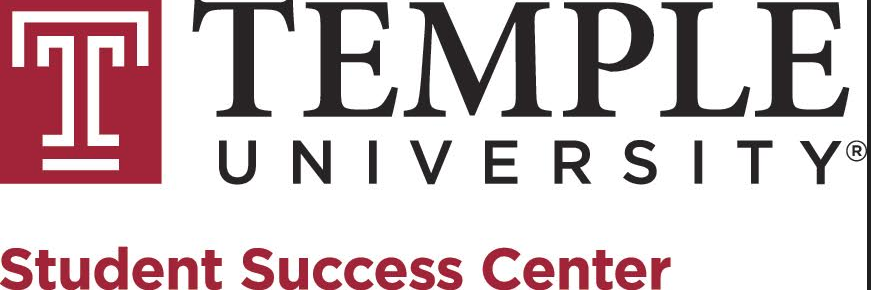

Studying Invasive Species
I worked with
Dr. Matthew Helmus
 and the
Integrative Ecology Lab.
The goal of the lab is to risk map the invasive Spotted Lanternfly, a south-Asian planthopper determental to the agricultural economy of the continental United States. My focus in the lab centered around data analyses and programming.
Using cloud-computing solutions, I analyzed raster data and determined co-variance between the population of the Lanternfly and human-controlled variables such as urban development,
croplands, and transportation facilities. Dr. Helmus and I drafted a paper with the hopes of demonstrating the power of cloud-computing and data science in the field of
ecology. I have presented my research at a research fair hosted by Temple University (seen in the image on the right) , as well as featured in the
student newspaper
I have learned valuable skills in JavaScript, python, CSS, HTML, and data analyses through my time with iEcoLab!
and the
Integrative Ecology Lab.
The goal of the lab is to risk map the invasive Spotted Lanternfly, a south-Asian planthopper determental to the agricultural economy of the continental United States. My focus in the lab centered around data analyses and programming.
Using cloud-computing solutions, I analyzed raster data and determined co-variance between the population of the Lanternfly and human-controlled variables such as urban development,
croplands, and transportation facilities. Dr. Helmus and I drafted a paper with the hopes of demonstrating the power of cloud-computing and data science in the field of
ecology. I have presented my research at a research fair hosted by Temple University (seen in the image on the right) , as well as featured in the
student newspaper
I have learned valuable skills in JavaScript, python, CSS, HTML, and data analyses through my time with iEcoLab!
Teaching Assistant and Tutoring
From January 2019 to January 2020, I worked as an undergraduate teaching assistant at Temple University. I assisted
Dr. Richard Beigel

 in the discreet mathematics course for computer science "Math Concepts in Computing I". My role was that of an aid; I lead two weekly recitations, one for
each of the class sections, administer quizzes, and hold weekly office hours to support students who are struggling with the material. Similarly, from January 2018 to May 2018 I was a STEM tutor
with the
Student Success Center at Temple University.
Here, I met with students one-on-one to cover topics in mathematics and physics, helping them develop a secure understanding of the material they covered in class, as well as learn positive
study habits. In both positions, I have learned crucial communication and problem solving skills which are versatile in any workplace environment!
in the discreet mathematics course for computer science "Math Concepts in Computing I". My role was that of an aid; I lead two weekly recitations, one for
each of the class sections, administer quizzes, and hold weekly office hours to support students who are struggling with the material. Similarly, from January 2018 to May 2018 I was a STEM tutor
with the
Student Success Center at Temple University.
Here, I met with students one-on-one to cover topics in mathematics and physics, helping them develop a secure understanding of the material they covered in class, as well as learn positive
study habits. In both positions, I have learned crucial communication and problem solving skills which are versatile in any workplace environment!